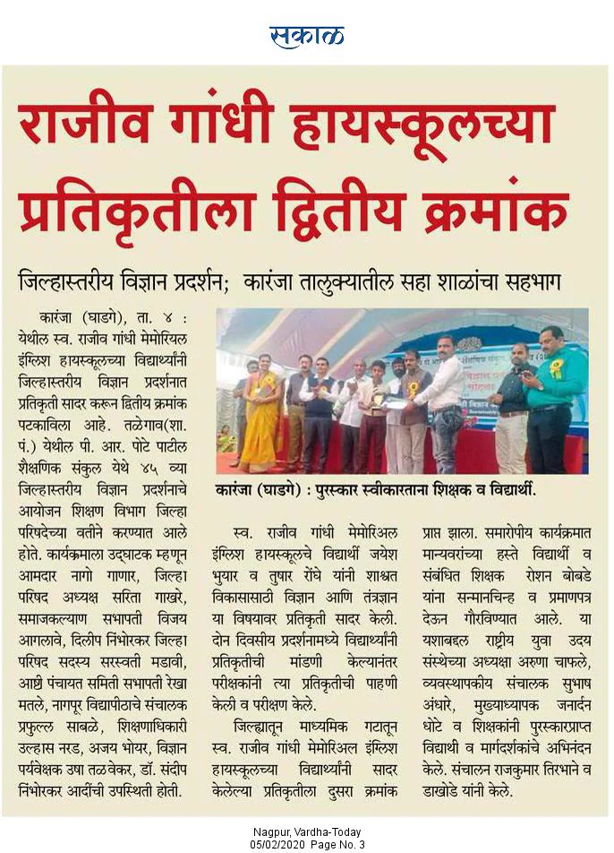

English-medium school
High school education in an English-medium setting in Karanja (Ghadge).
Late Rajiv Gandhi Memorial offers English-medium school education and junior college. Its website lists a Science faculty for standards 11 and 12.
Students are encouraged to build academic confidence and continue toward further study and career goals.
High school education in an English-medium setting in Karanja (Ghadge).
The school website lists Science faculty for 11th and 12th standard.
Students have taken part in science exhibitions at tehsil and district level.

The school website describes strong participation in science exhibitions and sports, including achievements at tehsil and district level.
School programmes and competitions give students opportunities to explore ideas, present their work and learn from one another.
The school website has described RTE 25% admissions and an education scheme for ST-category students. Scheme details and eligibility can change by session, so please confirm through the school’s official announcements.